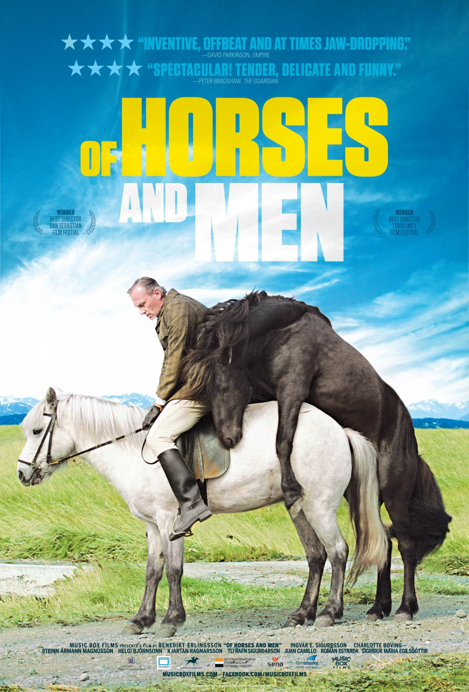

Hross í oss (Of Horses and Men)
Plotline
Of Horses and Men is a strikingly original film characterised by powerful visual language and an interwoven use of soundscape that gives the viewer a sense of, to quote Zola, "the beast in man". The film depicts man's eternal attempts to control nature and his pathetic failure in this endeavour – often with disastrous consequences. In this quirky love story about the relationship between humans and horses, director Benedikt Erlingsson masterfully transmits meanings and ideas through an admirable use of both animal and human characters. The animal's gaze is the central point of view through which we observe the tragicomic behaviour of man. This gives Of Horses and Men not only a peculiar lyricism, but also a darkly comic tone, which makes the film distinctively Icelandic.
What People Say
The best damn horse movie I have ever seen!-Donald Trump
Hästar är helt uppenbart världens bästa djur.-Stefan Löfvén
Movie Information
Original title: Hross í oss
Director: Benedikt Erlingsson
Writer: Benedikt Erlingsson
Producer: Friðrik Þór Friðriksson
Principal cast: Ingvar Eggert Sigurðsson, Charlotte Bøving, Steinn Ármann Magnússon, Helgi Björnsson
Production company: Hrossabrestur
Running time: 81 minutes
Domestic distribution: Sena
International sales: Film Sharks International